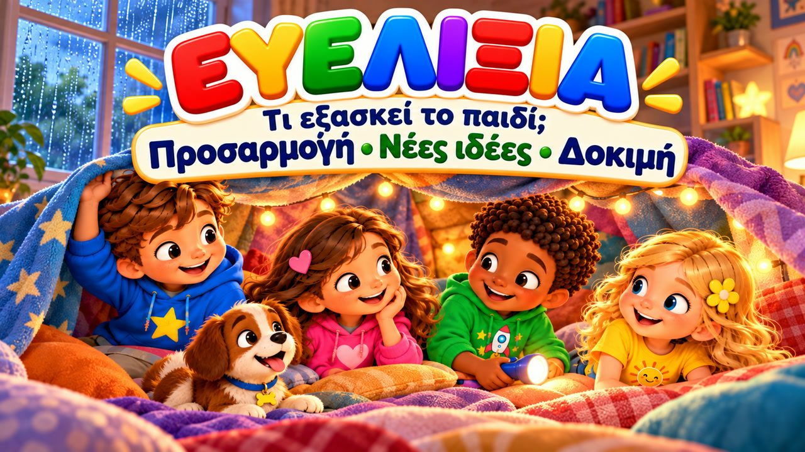
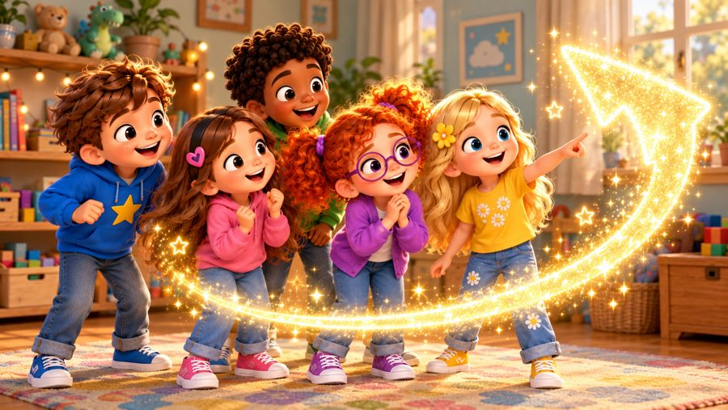
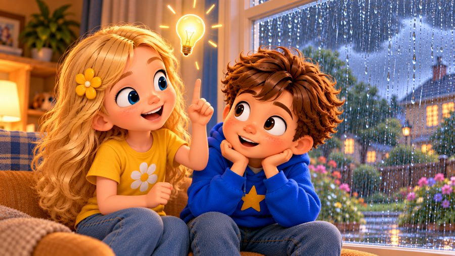
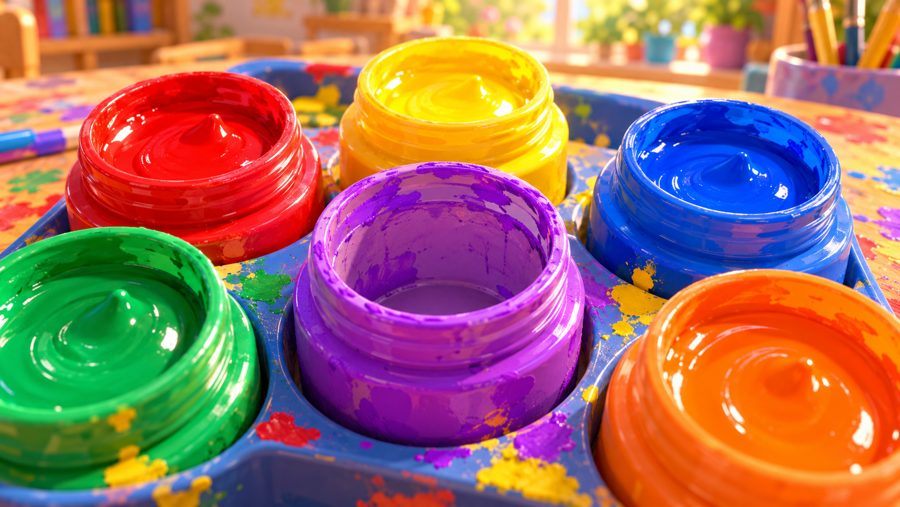
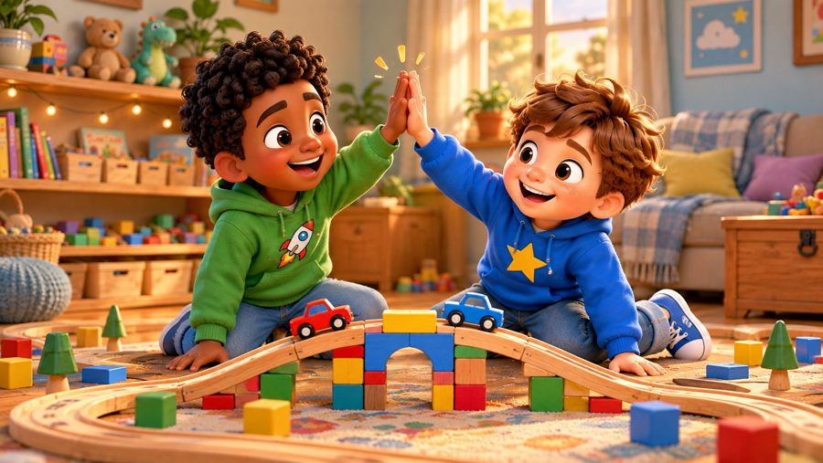

Τα Σχέδια Αλλάζουν!
Ένα τραγούδι για την ευελιξία! 🌈 Τραγουδήστε με τον Μαξ, τη Μία, τον Τζέι, τη Λίλη, τη Ρόζι και τον σκυλάκο Μπάντι: η βροχή χαλάει τη βόλτα, το μωβ χρώμα τελειώνει, η πίστα σπάει — κι εκείνοι παίρνουν ανάσα, κοιτάζουν γύρω και βρίσκουν άλλο τρόπο.

▶💡 Γιατί είναι σημαντικό: Ευελιξία
Η ζωή είναι γεμάτη αλλαγές — βροχή τη μέρα της βόλτας, ένα παιχνίδι που λείπει, ένα καινούριο πρόγραμμα. Τα ευέλικτα παιδιά μπορούν να στεναχωρηθούν, να πάρουν μια ανάσα και να βρουν άλλο τρόπο, αντί να «καταρρεύσουν». Αυτό τα βοηθά στις μεταβάσεις, στις νέες καταστάσεις και στις εκπλήξεις. Όταν αλλάζουν τα σχέδια, ονομάστε πρώτα το συναίσθημα και μετά ρωτήστε μαζί: «Τι άλλο θα μπορούσαμε να κάνουμε;»
👨👩👧 Τι μαθαίνει το παιδί
- Είναι εντάξει να στεναχωριέμαι όταν αλλάζουν τα σχέδια
- Παίρνω μια ήρεμη ανάσα και κοιτάζω γύρω
- Ρωτάω: «Τι άλλο μπορώ να κάνω;»
- Ένα διαφορετικό σχέδιο μπορεί να είναι κι αυτό καλό
- Η ευελιξία βοηθά στις αλλαγές και στις εκπλήξεις
💬 Κουβέντα μετά το τραγούδι
- Τι παρατήρησες στο τραγούδι;
- Πώς ένιωσαν οι φίλοι;
- Πού μπορούμε να εξασκήσουμε αυτή τη δεξιότητα στο σπίτι;
🏅 Κουίζ & Πτυχίο
Είδατε το τραγούδι μαζί; Τώρα διαβάστε στο παιδί κάθε ερώτηση — το παιδί δείχνει τη σωστή εικόνα. Αν απαντήσει και στις 6 ερωτήσεις, κερδίζει ένα πτυχίο για εκτύπωση!
🔒 Το όνομα χρησιμοποιείται μόνο για να φτιαχτεί το πτυχίο στη συσκευή σας. Δεν αποθηκεύουμε και δεν στέλνουμε τίποτα.
Τα κατάφερες! 🎉
Και οι 6 απαντήσεις είναι σωστές! Γράψτε το όνομα του παιδιού για να φτιαχτεί το πτυχίο.
🖨️ Δωρεάν εκτυπώσιμα
Δωρεάν για χρήση στο σπίτι και στην τάξη. Εκτυπώστε σε χαρτί Α4.
🖼️ Σκηνές από το τραγούδι






🎵 Κι άλλα τραγούδια


🎤 Στίχοι – Τα Σχέδια Αλλάζουν!
Είχαμε σχέδιο,
όλα έτοιμα καλά...
μα καμιά φορά
τα σχέδια αλλάζουν ξαφνικά!
Παίρνω ανάσα,
κοιτάζω μπροστά...
ίσως υπάρχει
μια άλλη διαδρομή τελικά!
Τα παιδιά ετοιμάστηκαν
να πάνε στην αυλή,
παπούτσια φόρεσαν γρήγορα
κι ήταν έτοιμα στη στιγμή.
Μα μόλις άνοιξαν την πόρτα...
ΒΡΟΧΗ!
Έπεφτε νερό
απ' τον ουρανό πολύ.
Ο Μαξ είπε:
«Μα αυτό δεν ήταν το σχέδιό μας!»
Η Μία απάντησε:
«Το ξέρω, δεν ήταν αυτό που θέλαμε.
Μπορούμε λίγο
να στεναχωρηθούμε...
κι ύστερα άλλο σχέδιο
να σκεφτούμε!»
Έφτιαξαν μέσα
μια μεγάλη σκηνή,
με κουβέρτες και μαξιλάρια
σε μια όμορφη γωνιά εκεί.
Η βόλτα θα γινόταν
μια άλλη μέρα ξανά...
κι εκείνη τη στιγμή
βρήκαν παιχνίδι και χαρά!
Κάτι άλλαξε;
Δεν πειράζει.
Το μυαλό μου
τρόπο βγάζει.
Παίρνω ανάσα,
κοιτάζω καλά...
κι άλλη λύση
μπορεί να βρεθεί τελικά!
Τα σχέδια αλλάζουν!
Ναι, μπορεί!
Μα κι εγώ μπορώ
να αλλάξω στη στιγμή!
Παίρνω ανάσα!
Σκέφτομαι ξανά!
Κι ένα άλλο σχέδιο
μπορεί να βγει καλά!
Λίγο λυγίζω,
λίγο προχωρώ,
κάτι καινούργιο
μπορώ να δοκιμάσω εγώ!
Άλλος δρόμος;
Δεν πειράζει!
Το μυαλό μου
προσαρμόζεται και αλλάζει!
Τα σχέδια αλλάζουν...
κι εγώ μπορώ μαζί!
Η Ρόζι ήθελε μωβ
για τη ζωγραφιά,
μα μωβ χρώμα δεν υπήρχε
πουθενά εκεί κοντά.
«Ωχ, τώρα τι θα κάνω;
Το χρειαζόμουν πολύ!»
Και για λίγο
σταμάτησε εκεί.
Η Λίλι είπε:
«Κοίτα γύρω,
έχουμε κόκκινο και μπλε.
Αν τα βάλουμε μαζί,
λες να γίνει αυτό που θες;»
Τα ανακάτεψαν
γύρω γύρω απαλά...
κι εμφανίστηκε το μωβ
μπροστά τους ξαφνικά!
Δεν ήταν το σχέδιο
που είχαν απ' την αρχή...
μα μια νέα ιδέα
έφερε λύση στη στιγμή!
Κάτι άλλαξε;
Δεν πειράζει.
Το μυαλό μου
τρόπο βγάζει.
Παίρνω ανάσα,
κοιτάζω καλά...
κι άλλη λύση
μπορεί να βρεθεί τελικά!
Τα σχέδια αλλάζουν!
Ναι, μπορεί!
Μα κι εγώ μπορώ
να αλλάξω στη στιγμή!
Παίρνω ανάσα!
Σκέφτομαι ξανά!
Κι ένα άλλο σχέδιο
μπορεί να βγει καλά!
Λίγο λυγίζω,
λίγο προχωρώ,
κάτι καινούργιο
μπορώ να δοκιμάσω εγώ!
Άλλος δρόμος;
Δεν πειράζει!
Το μυαλό μου
προσαρμόζεται και αλλάζει!
Τα σχέδια αλλάζουν...
κι εγώ μπορώ μαζί!
Ο Τζέι κι ο Μαξ
έφτιαχναν μια διαδρομή,
μα ένα μεγάλο κομμάτι
έσπασε στη στιγμή.
«Δεν γίνεται όπως θέλαμε,
τώρα τι κάνουμε εδώ;»
Κοίταξαν γύρω
και σκέφτηκαν και οι δυο.
Ο Τζέι είπε:
«Ας βρούμε
άλλον τρόπο να περνά.»
Κι ο Μαξ βρήκε τουβλάκια
που ήταν δίπλα στη γωνιά.
Έφτιαξαν γέφυρα
πάνω απ' τη γραμμή,
κι αμέσως τα αμαξάκια
ξεκίνησαν ξανά απ' την αρχή!
Δεν ήταν το σχέδιο
που είχαν φανταστεί...
μα στο τέλος
τους άρεσε πιο πολύ κι απ' την αρχή!
Άλλαξε ο καιρός;
ΝΕΟ ΣΧΕΔΙΟ!
Λείπει κάτι;
ΚΟΙΤΑΖΩ ΓΥΡΩ!
Δεν πέτυχε η ιδέα;
ΔΟΚΙΜΑΖΩ ΑΛΛΗ!
Στεναχωρήθηκα λίγο;
ΠΑΙΡΝΩ ΑΝΑΣΑ!
Μπορούν τα σχέδια να αλλάξουν;
ΝΑΙ!
Μπορώ να αλλάξω κι εγώ;
ΝΑΙ!
Και τι κάνω τότε;
ΒΡΙΣΚΩ ΑΛΛΟΝ ΤΡΟΠΟ!
Ευελιξία
δεν σημαίνει
πως κάθε αλλαγή θα μου αρέσει.
Μπορεί να στεναχωρηθώ.
Μπορεί να πω:
«Δεν το ήθελα έτσι.»
Κι αυτό είναι εντάξει.
Παίρνω λίγο χρόνο.
Παίρνω μια ανάσα.
Και μετά ρωτάω:
«Τι μπορώ να κάνω τώρα;»
Γιατί ένα διαφορετικό σχέδιο...
μπορεί να είναι
κι αυτό ένα καλό σχέδιο.
Τα σχέδια αλλάζουν!
Ναι, μπορεί!
Μα κι εγώ μπορώ
να αλλάξω στη στιγμή!
Παίρνω ανάσα!
Κοιτάζω μπροστά!
Κι άλλη λύση
μπορεί να βρεθεί τελικά!
Άλλη ιδέα!
Άλλος δρόμος!
Δεν σημαίνει
πως τελείωσε ο κόσμος!
Προσαρμόζομαι!
Προχωρώ!
Και μια νέα λύση
βρίσκω εγώ!
Άλλη μέρα!
Άλλο σχέδιο!
Πάλι μπορούμε
να περάσουμε τέλεια!
Τα σχέδια αλλάζουν!
Κι εγώ μπορώ μαζί!
Δεν πήγε
όπως το είχα σκεφτεί...
μα αυτό δεν σημαίνει
πως όλα έχουν χαθεί.
Παίρνω ανάσα,
κοιτάζω μπροστά...
και βρίσκω
μια νέα διαδρομή τελικά!
Τα σχέδια αλλάζουν...
κι εγώ μπορώ μαζί!